Koszenie, wycinka
i porządek na działce
Kosimy łąki i zarośnięte działki, wycinamy i przycinamy drzewa, dbamy o ogrody i sady, czyścimy teren pod budowę. Zimą odśnieżamy pługiem. Robimy to tak, jakbyśmy robili u siebie.
Jak u siebie
Każdy teren zostawiamy tak, jak chcielibyśmy zostawić własne podwórko. Posprzątany.
4 osoby od A do Z
Oglądamy, wyceniamy, robimy i sprzątamy sami. Bez podwykonawców.
Bez prądu i wody
Cały sprzęt jest spalinowy. Pracujemy też na działkach bez żadnych przyłączy.
Cały rok
Od wiosny do jesieni zieleń i porządki, zimą odśnieżanie pługiem.
Zaczęło się od dwóch pił i małego traktorka
Strefa Zieleni to Szymon Browarski i czteroosobowa ekipa z Pajęczna. Od pięciu lat kosimy, wycinamy, przycinamy i porządkujemy działki, ogrody i tereny firm w okolicy.
Dziś na podwórku stoi rębak Negri, ciągnik z kosiarką bijakową, podnośnik i pług do odśnieżania. Nic z tego nie jest wynajmowane, więc termin zależy od pogody i kolejki. Najbardziej cenimy stałą współpracę: ten sam teren, ta sama ekipa, sezon po sezonie.
- Własny sprzęt, bez czekania na wynajem
- Gałęzie idą przez rębak, zrębki zostają albo jadą z nami
- Wystawiamy faktury
- Nie robimy wycinek alpinistycznych, czyli bardzo wysokich drzew na linach

do własnego parku maszyn
Czym się zajmujemy
Od jednorazowego koszenia po stałą opiekę nad terenem przez cały rok. Wszystko jednym sprzętem i jedną ekipą.
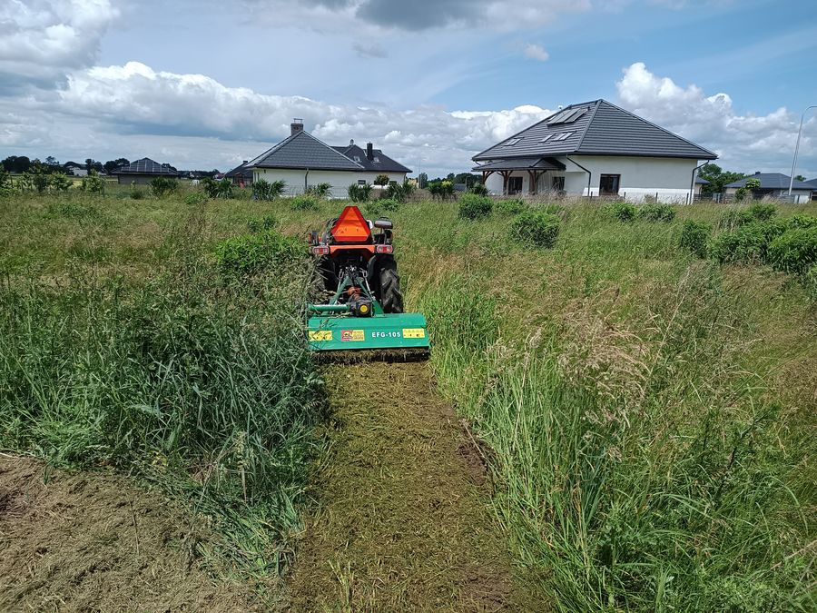
Koszenie
Ciągnik z kosiarką bijakową tam, gdzie trawa sięga pasa, i kosy spalinowe przy płotach i drzewach.
Zobacz ofertę →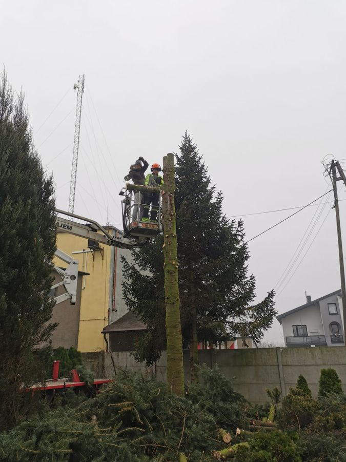
Wycinka i przycinka drzew
Wycinamy i przycinamy drzewa przy domach i na działkach. Gałęzie od razu idą przez rębak.
Zobacz ofertę →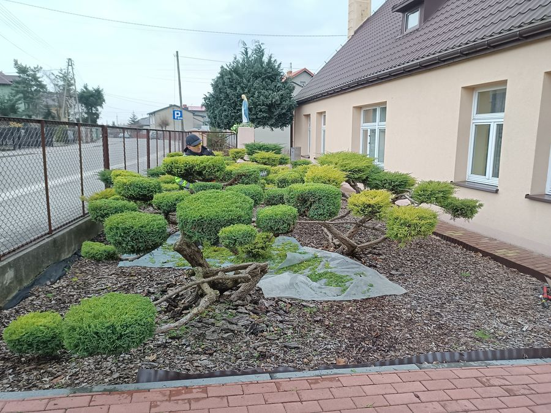
Pielęgnacja ogrodów i sadów
Formowanie krzewów, cięcie drzew owocowych, porządki w ogrodach i sadach. Raz albo przez cały sezon.
Zobacz ofertę →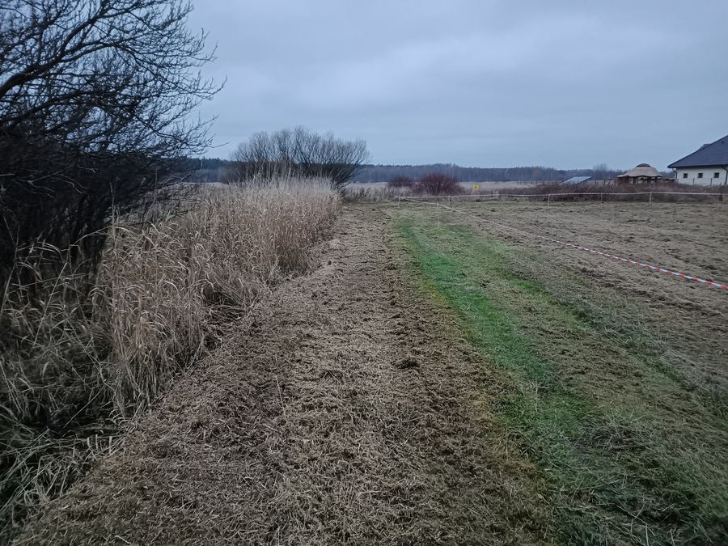
Czyszczenie działek pod budowę
Zarośnięte działki i tereny pod inwestycje przygotowane tak, żeby dało się wejść z geodetą i koparką.
Zobacz ofertę →Maszyny, którymi to robimy
Wszystko stoi u nas na podwórku i wyjeżdża na każde zlecenie. Nic nie jest wynajmowane, więc termin zależy tylko od pogody i kolejki. Kliknij zdjęcie, żeby powiększyć.
 Rębak Negri
Rębak Negri
 Ciągnik z kosiarką bijakową
Podnośnik do wycinki
Ciągnik z kosiarką bijakową
Podnośnik do wycinki
{kind=link}
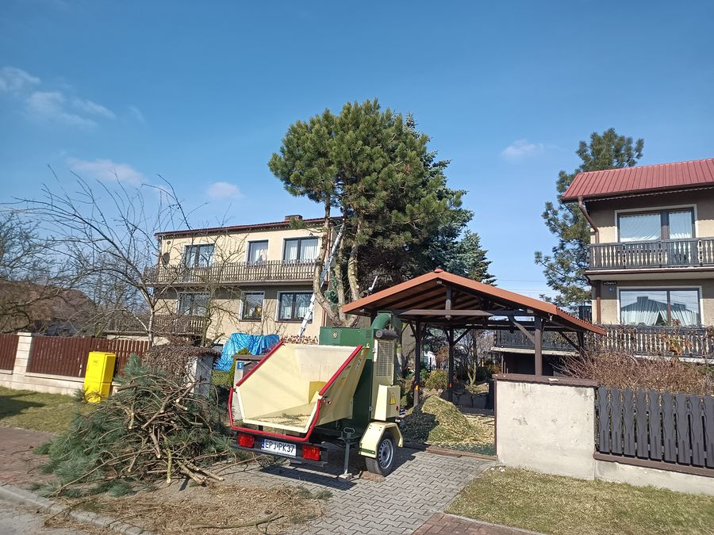
Rębak przy pracy Pług do odśnieżania
Bijakowa w akcji
Pług do odśnieżania
Bijakowa w akcji
{kind=link}
Cały sprzęt jest spalinowy, więc nie potrzebujemy od Państwa prądu ani wody. Pracujemy też na działkach bez żadnych przyłączy, np. tuż po zakupie, przed budową.
Ta sama działka, przed i po
Zarośnięte dojście między budynkami, chwasty po pas. Oba zdjęcia zrobiliśmy w odstępie minuty: przed przejazdem kosiarki bijakowej i zaraz po nim.
Proszę przesunąć suwak na zdjęciu, żeby porównać.
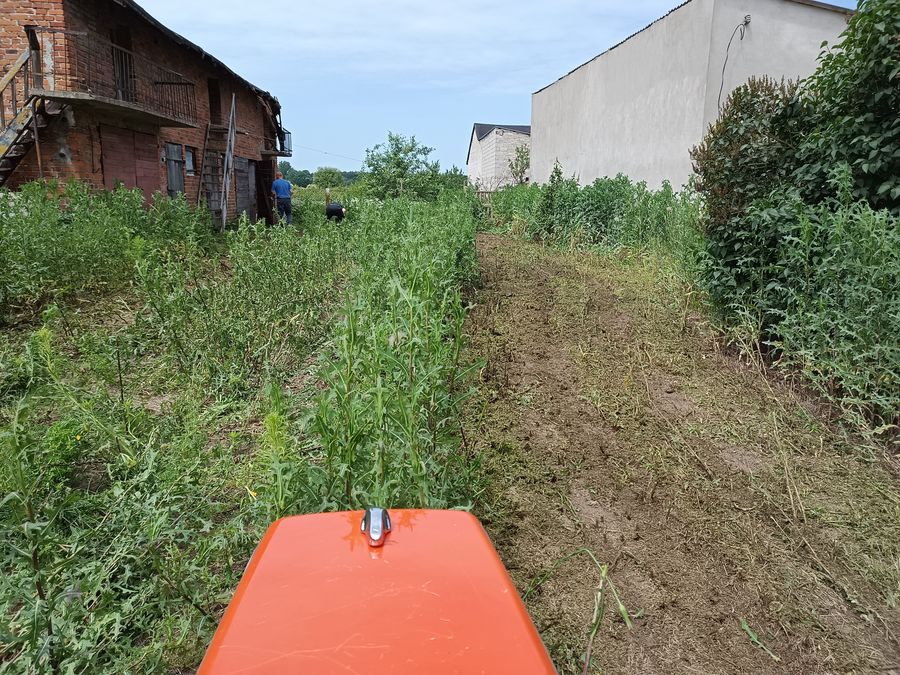
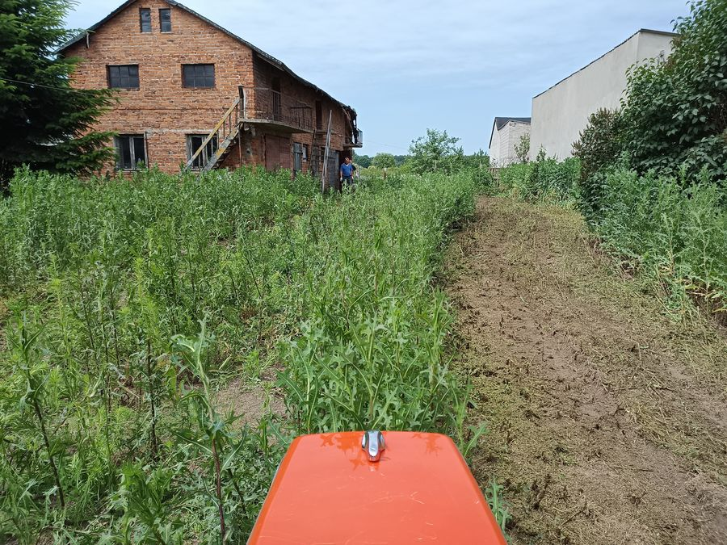
PrzedPoZrobione u klientów
Wszystkie zdjęcia są z naszej pracy. Proszę kliknąć zdjęcie, żeby zobaczyć w powiększeniu.
{kind=link}
{kind=link}
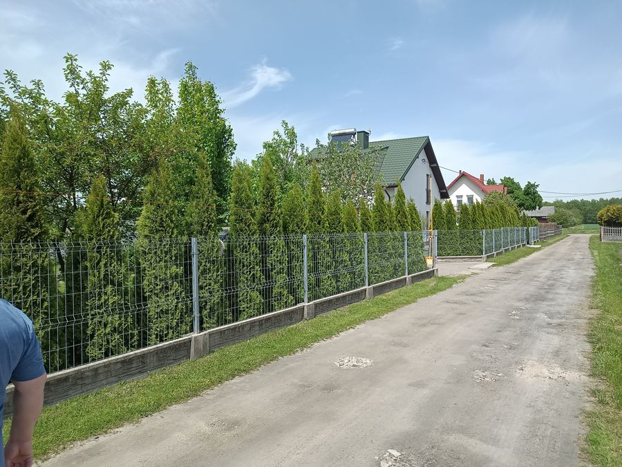
Żywopłot przycięty na równo{kind=link}
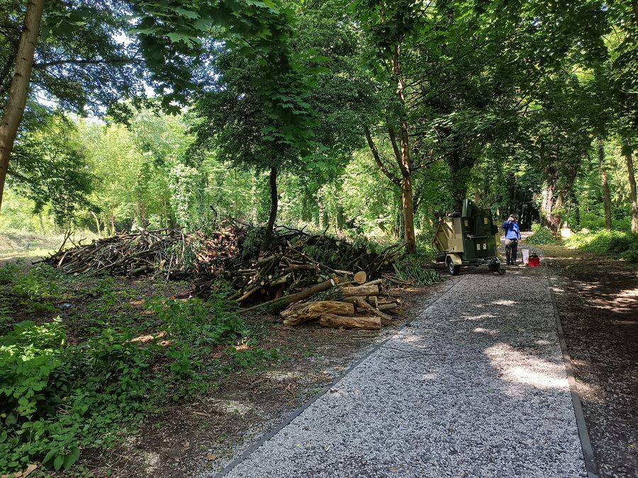
Porządki w zadrzewionym terenie{kind=link}
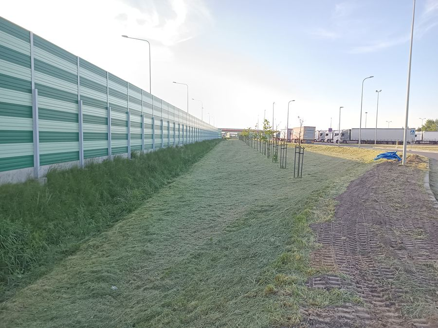
Pas zieleni przy ekranach Rębak na posesji{kind=link}
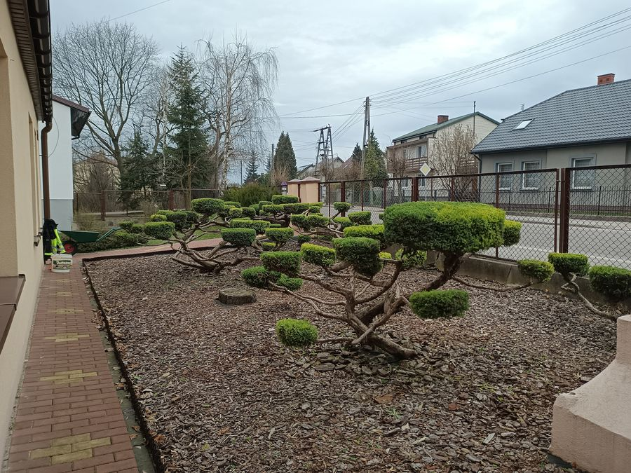
Ogród od strony chodnika Karczowanie zarośli{kind=link} Koszenie łąki
Koszenie łąki
{kind=link}
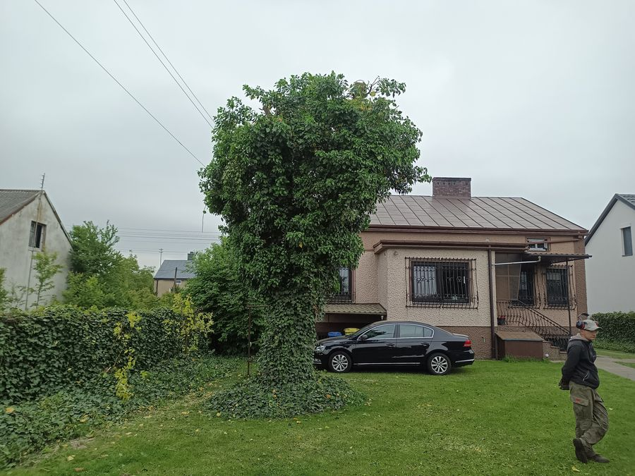
Wysokie cięcie przy domu{kind=link}
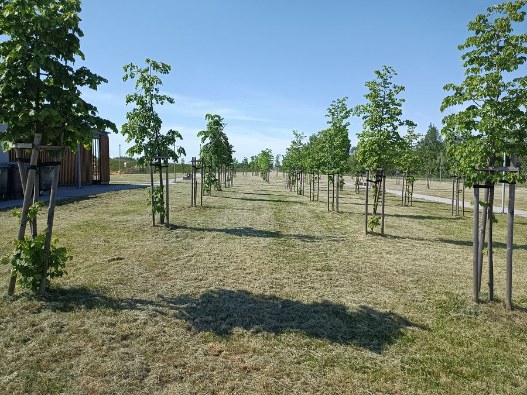
Młode nasadzenia po pielęgnacjiNasz rębak Negri
{kind=link}
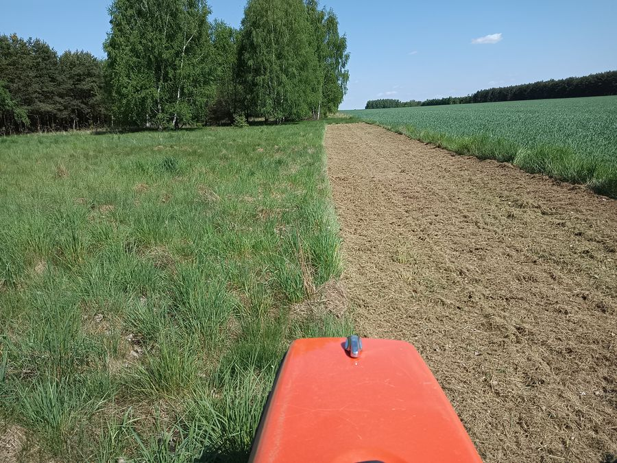
Skoszone i nieskoszone obok siebie{kind=link}
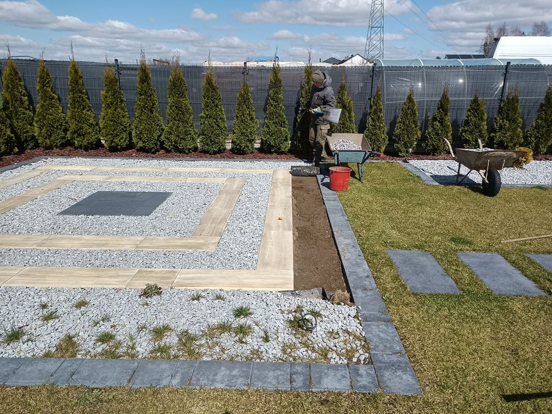
Teren po porządkach Przed koszeniem Po koszeniu{kind=link}
{kind=link}
MOP Woźniki przy autostradzie A1
Pięć hektarów wycinki przy miejscu obsługi podróżnych na A1. Zrobiliśmy to w dwa dni, własnym sprzętem i naszą czteroosobową ekipą. Duży teren nas nie przeraża, a przy większych zleceniach jedziemy dalej niż zwykłe 40 km.
Ocena 5,0 z 22 opinii w Google
Wystawiają je ludzie, u których skończyliśmy robotę.
Jestem bardzo zadowolony z usług Strefy Zieleni. 2 dni pracy z piłą i rębakiem zrobiło robotę w zaniedbanym ogrodzie. Firma solidna, elastyczna i z dobrą ceną do jakości usług.
Zdecydowanie polecam. Bardzo rzetelnie i szybko wykonana praca, bardzo dobra komunikacja i współpraca z inwestorem.
Teren wyrównany glebogryzarką separacyjną idealnie. Dziękuję jeszcze raz.
Sprawdź, czy dojedziemy
Pracujemy do 40 km od Pajęczna, a do 10 km wycena i dojazd są gratis. Proszę wpisać miejscowość albo kliknąć na mapie.
Czy do Państwa dojedziemy?
Proszę wybrać miejscowość albo kliknąć dowolne miejsce na mapie. Pokażemy odległość od naszej bazy i warunki dojazdu.
Odległość liczona w linii prostej od bazy w Pajęcznie. Drogą wychodzi zwykle trochę więcej, a dokładne warunki ustalamy przez telefon.
Od telefonu do uprzątniętego terenu
Telefon albo zdjęcia
Dzwonią Państwo albo wysyłają zdjęcia na WhatsApp. Pytamy o wielkość terenu, dojazd i co trzeba zrobić.
Oględziny i cena
Przyjeżdżamy, oglądamy teren i podajemy cenę razem z terminem. Przed pracą, nie po. Do 10 km bez opłat.
Robota
Wjeżdżamy z maszynami albo idziemy z kosami, zależnie od terenu. Gałęzie od razu idą przez rębak.
Sprzątanie i faktura
Teren zostaje posprzątany. Na koniec faktura, a jeśli Państwo chcą, umawiamy kolejny termin.
Co ludzie pytają najczęściej
Ile kosztuje wycena?
Do 10 km od Pajęczna wycena i dojazd są bezpłatne. Przyjeżdżamy, oglądamy teren i podajemy cenę, zanim cokolwiek zaczniemy. Dalej niż 10 km koszt dojazdu mówimy od razu przez telefon.
Jak daleko dojeżdżacie?
Do 40 km od Pajęczna. Najczęściej pracujemy w Pajęcznie, Działoszynie, Trębaczewie, Raciszynie i Sulmierzycach. Swoją miejscowość mogą Państwo sprawdzić na mapie obszaru działania.
Czy wycinacie bardzo wysokie drzewa?
Nie robimy wycinek alpinistycznych, czyli bardzo wysokich drzew, do których trzeba wchodzić na linach. Pozostałe wycinki robimy z podnośnika i z ziemi. Jeśli nie wiadomo, do której grupy należy drzewo, wystarczy wysłać zdjęcie.
Co się dzieje z gałęziami?
Rozdrabniamy je rębakiem na miejscu. Zrębki mogą zostać pod krzewy albo zabieramy je razem z resztą zieleni.
Czy potrzebujecie prądu albo wody na miejscu?
Nie. Cały sprzęt jest spalinowy, więc pracujemy też na działkach bez żadnych przyłączy, np. pod przyszłą budowę.
Czy wystawiacie faktury?
Tak, dla osób prywatnych, firm, wspólnot i instytucji.
Czy można się umówić na stałe?
Tak, i na tym zależy nam najbardziej. Przy stałej obsłudze terenu przyjeżdżamy regularnie przez cały sezon, a zimą możemy też odśnieżać.
Trzy kliknięcia i mamy komplet informacji
Zamiast pisać wiadomość od zera, proszę zaznaczyć, co trzeba zrobić. Przygotujemy gotową treść, którą wystarczy wysłać na WhatsApp.
Wolą Państwo po prostu zadzwonić?
Jeden telefon zwykle wystarczy, żeby ustalić, o jaki teren chodzi i kiedy możemy przyjechać obejrzeć. Jeśli nie odbieramy, jesteśmy przy maszynie. Oddzwonimy.
+48 694 015 371Policzymy Państwa teren
Do 10 km od Pajęczna przyjeżdżamy obejrzeć teren i wyceniamy bez opłat. Dalej, do 40 km, też dojeżdżamy, a koszt dojazdu mówimy od razu przez telefon.